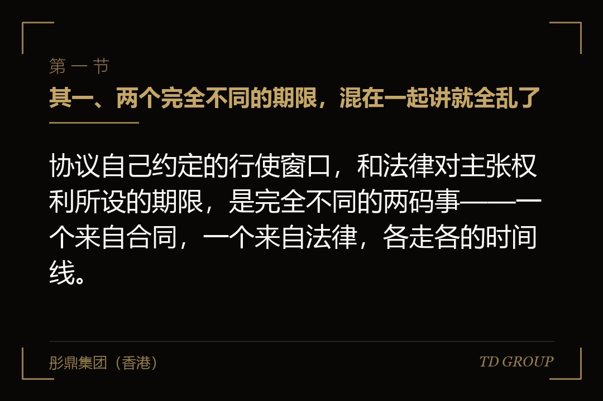
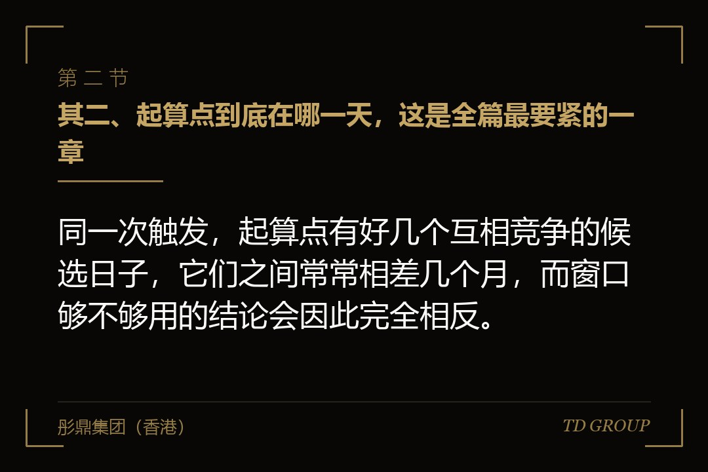
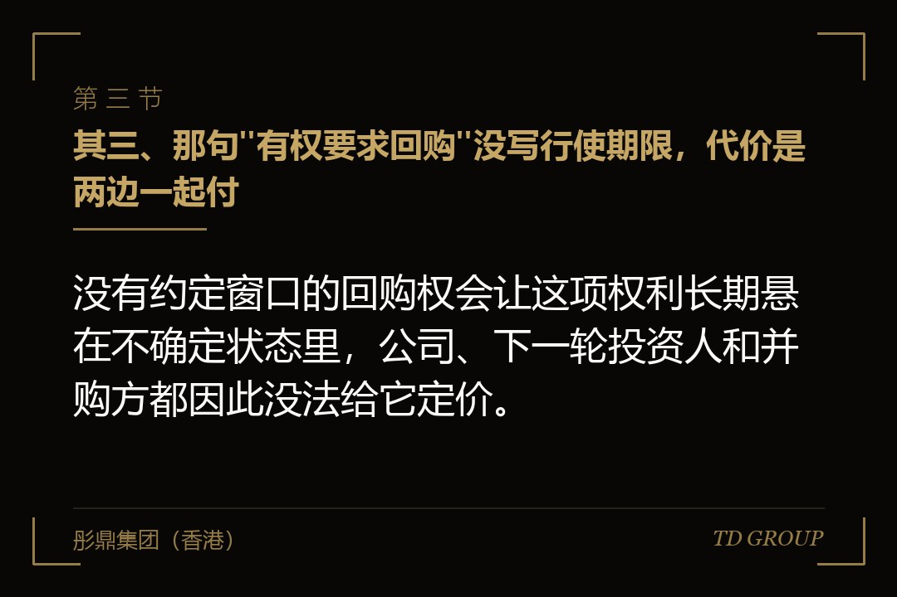

其一、两个完全不同的期限，混在一起讲就全乱了

结论先行：协议自己约定的行使窗口，和法律对主张权利所设的期限，是完全不同的两码事——一个来自合同，一个来自法律，各走各的时间线。
行使窗口是双方自己写进协议的那句话，形状通常是"触发之日起若干时间内以书面方式提出"。它是合同给这项权利画的边界：窗口之内提出来，权利成立；窗口过去了，这项权利本身就不在了，不存在续期，也不看谁有没有过错。
法律那道期限是另一回事。即使协议一个字没写窗口，法律对主张权利也普遍设有期限，起算点通常与知道或应当知道权利受损的时点挂钩。它管的不是"你有没有资格提出来"，而是"你提出来之后还能不能获得强制力的支持"。
顺序上，这两道是接力的关系。投资方先要在合同窗口里把回购的意思表示做出来，回购义务从那一刻才真正落到义务人头上；接下来对方不付钱，投资方去追这笔钱，走的就是法律那道期限。前一道断了，后一道根本不会开始。
有家开连锁药房的公司，创始人一直觉得法律那道口子还宽着，投资方随时能回来找他，所以谈判时把姿态放得很低。后来律师帮他把协议逐条捋了一遍才发现，协议自己约定的窗口比他想的短得多，而且早就走完了。
反过来的情形也不少见：创始人以为窗口早过了，实际上对方在窗口里发过一份函，只是当时被当成例行的催告文件收进了抽屉。具体的期限长短、起算点认定与中断情形，各地司法实践存在差异且规则会调整，以当时有效的法律与生效裁判为准；涉及具体案子务必找律师逐项核对。
其二、起算点到底在哪一天，这是全篇最要紧的一章

结论先行：同一次触发，起算点有好几个互相竞争的候选日子，它们之间常常相差几个月，而窗口够不够用的结论会因此完全相反。
常见的候选有四个：业绩期届满那一天、审计报告出具那一天、投资方知道或应当知道触发那一天、协议约定的付款截止日。四个日子在时间轴上依次靠后，最早的和最晚的之间隔上大半年是很平常的事。
难就难在业绩达没达标这件事，本身要等数据出来才知道。业绩期年底届满的时候，谁也说不准最终口径；等审计报告出具，数字才落定。于是"应当知道"这四个字，就跟审计的节奏、双方的信息渠道、中间有没有开过董事会绑在了一起。
有家做纺织印染的公司，业绩期在年底届满，审计报告拖到过了大半年才出来。投资方主张从审计报告出具那天起算，创始人主张从业绩期届满那天起算——够不够窗口，全看这两个日子哪一个说了算。
这一章之所以最要紧，是因为它不是个技术细节，而是整件事的前提。起算点定在前面那个日子，投资方可能已经出局；定在后面那个日子，创始人手上那点从容就一天都不剩了。两边算的从来不是同一条线，这才是争议的真正来源。
还有一层现实的推力值得知道：基金本身是有存续期的，走到后段，退出的压力会推着投资方在窗口里先把主张做出来，哪怕后面还要慢慢谈。基金存续期怎么影响退出节奏，另有专文。
能做的事其实很朴素：签的时候就把起算点绑到一个有日期、可验证的客观事件上，别让它悬在"知道"这两个字上。哪一天算数写清楚了，后面所有的争论都省掉了一大半。
其三、那句"有权要求回购"没写行使期限，代价是两边一起付

结论先行：没有约定窗口的回购权会让这项权利长期悬在不确定状态里，公司、下一轮投资人和并购方都因此没法给它定价。
对公司这边，麻烦是它挂在那儿不落地。账上要不要为它做准备、下一轮投资人愿不愿意接、并购方要不要在价款里预留一笔，全都没有答案，因为谁也说不清这项权利什么时候会被拿出来用。
有家做智能仓储货架的公司，新一轮尽调时对方翻到老协议里那句没有期限的回购，当场要求老股东先出一份书面文件把截止日约定下来，否则这一轮不签。整轮谈判被这一条挂住，创始人临时去挨个找老股东谈，什么筹码都没有。
对投资方也不见得占便宜。这项权利越是含糊，它在老股转让时越卖不上价：买方接手的是一个说不清什么时候会到期、也说不清能不能主张得下来的东西，价格上一定会打折。
所以"不写期限"不是对谁有利，它只是把定价的难题往后推，然后由双方在最不合适的时点一起承担。真正稳妥的做法是双方都把话说明白：写一个双方都能接受的窗口，比留一个悬着的口子对谁都好。
其四、书面主张怎么才算数：主张过和证明得了是两件事
结论先行：能不能证明你在窗口里主张过，跟你有没有主张过，是完全不同的两件事，而真到了要拿证据那一天，看的只有前一件。
口头催过、饭桌上提过、微信里说过一句，在双方关系还好的时候都算数；到了要拿证据的那一天，它们的分量取决于对方认不认。发了函却拿不出送达凭据，情况是一样的——函确实发了，但证明不了它到过对方手上。
有家做生鲜供应链的公司，投资方在窗口里确实在董事会上提过回购，也在工作群里艾特过创始人。可协议约定的通知方式是书面送达到指定地址，会议纪要那一段又写得含糊，最后能拿出来的东西全都差着一口气。
创始人这边有对称的风险，方向正好相反。协议里写的送达地址一直没更新，公司早搬了办公室，对方按老地址寄出去照样可能算送到；收到函之后拒签，多数时候也不等于没送达。
所以两边真正要做的是同一件事：留痕。用协议约定的方式发、保留发件凭据和签收记录、把对方的每一次书面回复原样存好——对方回的那一句，往往比自己发的那一份更能说明问题。
其五、中断与重新起算：以为快熬过去了，其实早被推回起点
结论先行：一次有效的书面主张、一笔部分履行、一份新达成的还款安排，任何一样都可能把已经走过的时间清零，让时点重新开始计算。
这一条对创始人尤其危险，因为它的形状跟"拖延战术"长得几乎一样。创始人想的是先稳住对方、把时间拖过去，做出来的动作却恰恰是让时点回到起点的那几个动作。
有家做特种作业技能鉴定的公司，创始人为了缓一缓，跟投资方签了一份分期回购的补充安排，还按约定付了头一笔钱。他心里算的是拖，实际结果是那次签字加那笔钱，把整件事的时点重新推回了起点，而且白纸黑字，一点争议空间都没有。
这不是说不能谈、不能付。谈判和分期本来就是处理触发之后最常用的两条路，值得谈的时候当然要谈。要紧的是谈之前先知道这么做的代价：你换来的是缓冲，付出的是时点重新起算。
对投资方而言，这一条的用法是反过来的：与其掐着窗口的最后几天硬来，不如在窗口里先把书面主张做扎实。具体的期限长短、起算点认定与中断情形，各地司法实践存在差异且规则会调整，以当时有效的法律与生效裁判为准；涉及具体案子务必找律师逐项核对。
其六、义务人是公司还是创始人个人，两条路从头就分岔
结论先行：公司回购和创始人个人回购是两种性质完全不同的义务，走的程序不同，能主张的对象不同，时点也可能各算各的。
公司回购要过公司法上的那道关口：涉及减资程序与债权人保护，公司还得有可供支付的资金。它不是双方点头就能完成的动作，中间隔着一整套对外的程序。这一条怎么走另有专文，本篇不展开。
创始人个人回购则是纯粹的合同之债，由个人的财产来承担，程序上简单得多。正因为简单，投资方在起草时往往希望把创始人个人一并写进义务人那一栏——这里面的个人财产风险与签字页上的那一行，另有专文详述。
回到时点上，这两条路的意义在于：同一次触发，投资方可能只对其中一方做出了主张。协议里两个义务人都写着，函却只发给了个人，或者只发给了公司，后面能不能补、补了算不算数，就是另一场争论。
开头那家做环保水处理设备的公司，情况正是这样：协议里公司和创始人本人都在义务人那一栏，而投资方那份函只寄给了创始人个人。等到真要动公司层面的东西时，双方对"这项主张覆盖到谁"各说各话。
其七、权利过期之后剩下什么：别以为熬过去就没事了
结论先行：回购这条路走不通，不等于对方手上没有别的牌，也不等于这件事就此结束，把熬过去当成策略往往是最贵的一种打法。
回购请求受阻，投资方还可能主张违约责任，还可能援引协议里另外约定的救济安排。这些路径各自的成立条件不同、结果也不同，但它们的存在本身就说明：一条路封住了，不等于这件事结束了。
更现实的一层在关系上。这位投资方还在股东名册上待着，后面每一次融资、每一次并购、每一次工商变更、每一份需要全体股东签字的文件，都要他配合。一个觉得自己被拖掉了权利的股东，会在这些时刻一一还回来。
有家做纺织印染的公司走过这条路：回购那件事最后确实不了了之，可接下来两轮融资，那位老股东在同意事项上一次比一次难说话，新投资人看在眼里，估值和条款都跟着往下压。
所以创始人真正该算的账不是"能不能熬过去"，而是"熬过去之后我还要跟他共事多久"。触发之后最划算的动作，通常是趁着双方都还愿意谈的时候，把这件事一次性谈成一个双方都能执行的安排。
其八、签的时候把这四样写清楚，将来两边都省事
结论先行：触发情形、起算点、行使窗口、书面通知方式与送达地址，这四样在签字那天写不清楚，将来两边都要为它多打一场本来可以不打的仗。
触发情形要写成可验证的客观事件，别留下"业绩未达预期""发生重大不利变化"这类需要事后解释的表述。判断标准越是要靠解释才能落地，将来越会变成两边各执一词的地方。
起算点绑到一个有日期的文件或者一个有日期的事件上，比如某一份报告出具之日、某一次会议决议作出之日。写成"知道之日"看着周全，实际上是把最大的一个变量原封不动留给了将来。
行使窗口给一个具体的期间，并且写明逾期的后果——是权利消灭，还是仍可主张但另有安排，两种写法差得很远。通知方式则写死一种能留痕的方式，再配一条地址变更的通知义务，免得几年后寄到一个空房子。
已经签完的公司也不是没事可做。把手上每一份协议里的回购条款、触发情形、起算点与行使窗口逐条捋出来，弄清楚哪几条已经触发、哪几条还没有、各自算到哪一天，这件事本身就是一次有价值的体检。华尔街彤鼎俱乐部里被反复讨论的，也正是这类条款在不同交易结构下的写法差异。
说到底，回购条款是一份融资协议里最容易被当成"标准条款"一带而过的东西，也是触发之后最容易失控的东西。它一直在协议里，但它未必一直在你手上，也未必一直在对方手上——而搞清楚它现在到底在谁手上，是双方坐下来谈之前该做的头一件事。
本文为企业上市与公司治理知识分享，面向企业经营者，不构成任何投资建议或证券投资咨询服务，也不构成对任何证券的买卖推荐。相关规则以监管机构正式文本为准。